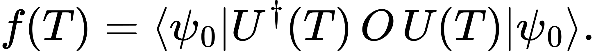
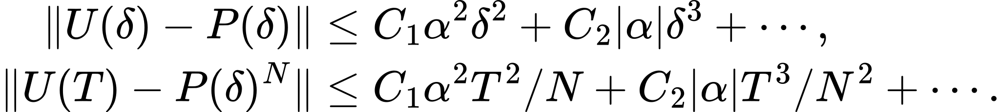
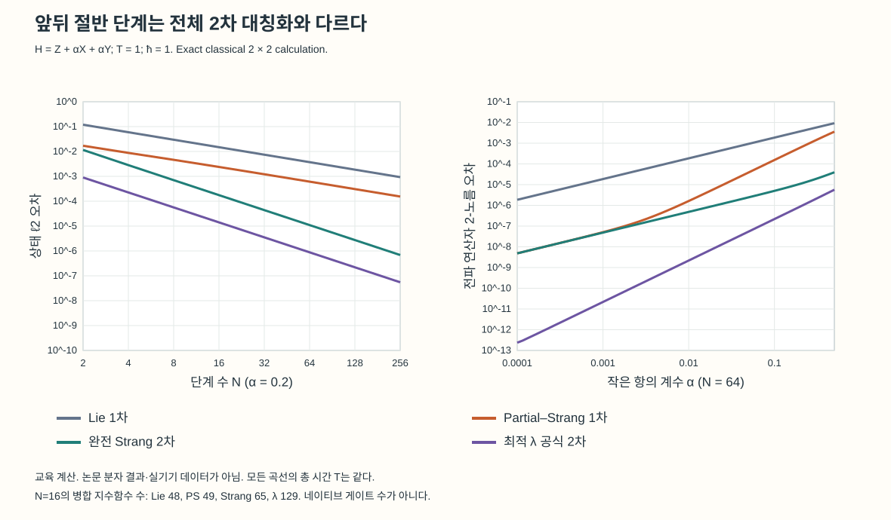
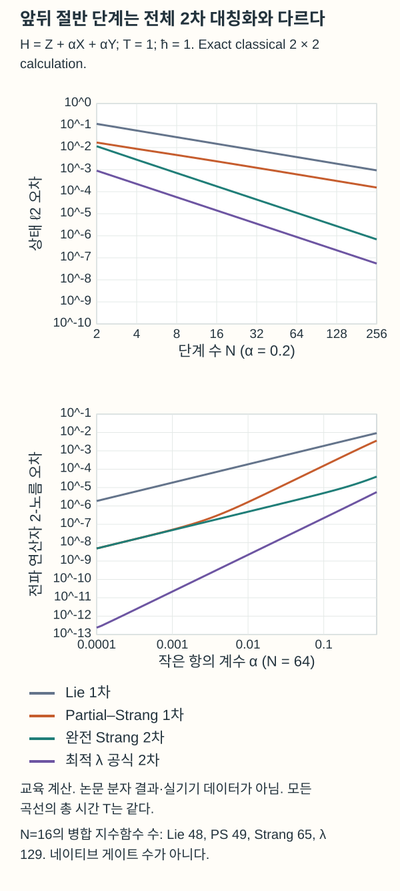
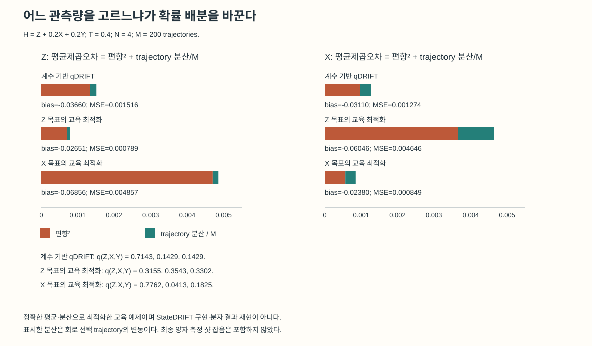
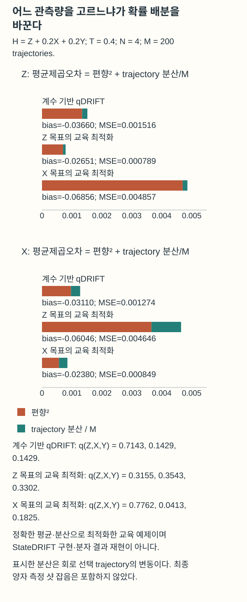
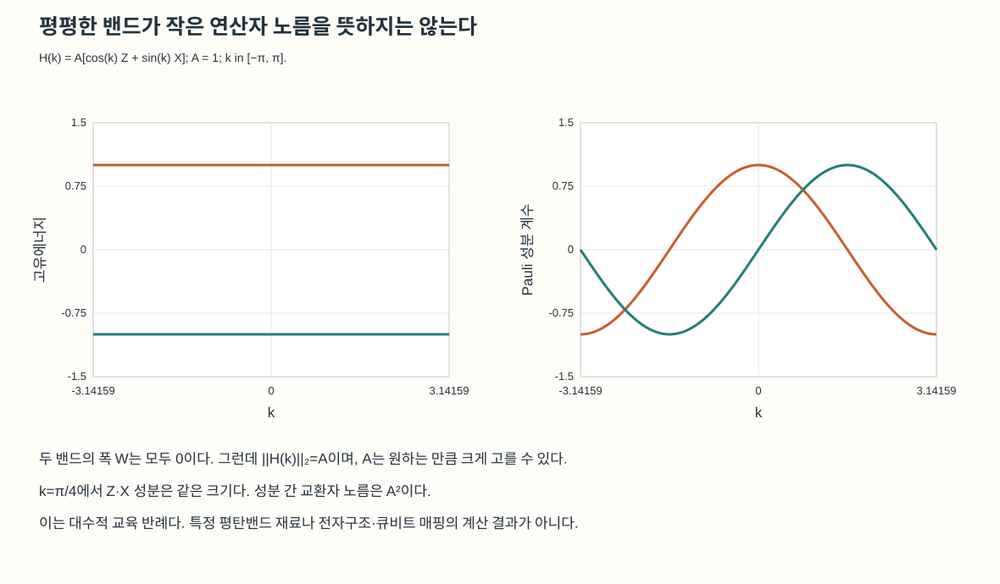
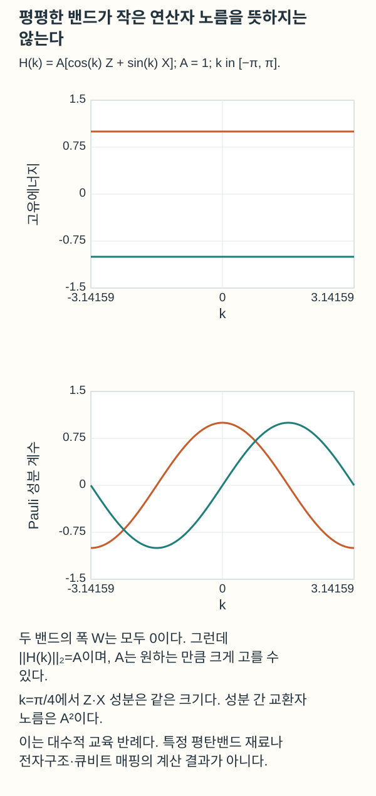

관측량과 항의 크기에 맞춘 양자 동역학 계산
같은 해밀토니안에서도 목표 관측량과 항의 노름에 따라 좋은 근사는 달라진다. StateDRIFT와 norm-aware 곱 공식을 정확한 교육 계산으로 비교한다.
TECH REVIEW · 2026년 10월 26일 · 양자 동역학·해밀토니안 시뮬레이션·계산과학

내용 살펴보기
같은 Hamiltonian으로 계산하더라도 우리가 알고 싶은 값은 다를 수 있다. 모든 초기상태의 시간발전을 정확히 근사해야 하는 경우가 있는가 하면, 한 초기상태에서 특정 점유량이 얼마나 바뀌는지만 필요한 경우도 있다. 후자의 질문에 전자의 모든 조건을 요구하면 불필요하게 긴 회로를 만들 수 있다. 반대로 특정 관측량에 맞춰 만든 근사를 다른 관측량에 그대로 재사용하면 계산의 정확도가 나빠질 수 있다.
2026년 10월 공개된 StateDRIFT와 norm-aware product formula 프리프린트는 이 선택을 서로 다른 위치에서 한다. 하나는 초기상태·관측량에 맞춰 무작위 시간발전 항의 선택 확률을 바꾸고, 다른 하나는 큰 항과 작은 항을 배치하는 결정론적 곱 공식을 바꾼다. 각 방법이 줄이는 오차와 요구하는 입력을 정하고, 같은 목표 정확도에서 필요한 연산을 비교할 수 있다.[1,2]
시간발전을 잘 근사한다는 세 가지 뜻
VQE와 같은 에너지 계산에서는 준비한 상태에서 값을 읽는 법과 반복 측정의 배분이 중요한 문제다. 여기서는 시간발전을 만드는 근사 자체를 살핀다. 관측량에 반복 측정을 더 하는 것과, 어떤 Hamiltonian 항의 회전을 더 자주 수행하는 것은 다른 설계 변수다.
ħ=1로 두고 H의 정확한 시간발전을 U(T)=exp(−iHT)라 쓰자. 모든 입력 상태를 통제하려면 전파 연산자의 노름 오차 ||U−Ũ||를 볼 수 있다. 초기상태 |ψ₀⟩를 이미 정했다면 두 출력 상태의 거리도 볼 수 있다. 물리적으로 읽을 O까지 정했다면 목표는 다음 기대값이다.

전파 연산자를 잘 근사하면 관측량 오차의 상계를 얻을 수 있지만, 관측량 하나가 잘 맞는다는 사실로 모든 상태·모든 관측량의 정확성을 역으로 결론 낼 수는 없다. 특히 무작위 회로를 평균한 출력은 일반적으로 혼합상태여서, 단일한 근사 유니터리의 오차와 같은 숫자로 다룰 수도 없다.
큰 항을 반씩 감싸면 왜 도움이 되는가
Hamiltonian이 H=H₀+α(H₁+H₂)이고 세 H의 노름이 비슷하며 |α|가 작다고 하자. δ=T/N은 한 단계의 시간이다. 가장 단순한 Lie 곱과 dominant 항을 감싼 Partial–Strang 곱을 비교할 수 있다.

이 식은 쓰인 순서의 행렬곱이며 상태에는 오른쪽 인자부터 작용한다. P는 양 끝의 H₀를 대칭화하지만 가운데 H₁·H₂는 역순으로 되감지 않는다. 따라서 일반적으로 1차 공식이다. 가운데까지 대칭화하는 완전 Strang 2차 공식과 구별해야 한다.
큰 항과 작은 항의 교환에서 생기는 leading 기여를 억제하는 것이 이 배치의 목적이다. 그러나 국소 오차를 α²δ² 하나로 끝내면 중요한 조건을 잃는다. 고정한 항과 노름에 의존하는 상수 C₁,C₂를 두면 관련 두 기여는 다음처럼 읽을 수 있다.

α를 고정해 단계를 짧게 하는 극한과, 단계 길이를 고정해 α만 작게 하는 극한은 다르다. 후자에서는 선형 α 잔차가 지배할 수 있다. 원 논문 Appendix B도 이 교차를 구별한다. ‘작은 항이 있으니 언제나 α²로 좋아진다’는 설명보다, 어떤 항이 목표 정밀도를 제한하는지 확인하는 편이 계산에 직접 도움이 된다.[2]
논문의 다섯 분자 비교에서 보고한 4.5–8배는 STO-3G 기저·T=1 au·N=100에서 궤도 회전을 가한 Hartree–Fock 초기상태 10개를 사용한 평균 상태 전파 ℓ2 오차 감소다. dominant 연산을 한 번 더 배치하는 비용도 실제 궤도 회전·native gate로 내리면 별도 계산이 필요하다. operator-norm 보장과 특정 상태의 수치 오차, 장치 실행시간은 각각 다른 척도다.
한 큐비트에서 드러나는 차수와 비용
독립 교육 계산은 NumPy 2.0.2로 H=Z+0.2X+0.2Y, T=1에서 수행했다.[3] 초기상태는 cos(1.05/2)|0⟩+exp(0.38i)sin(1.05/2)|1⟩다. 일반 비가환 합의 동작을 정확한 2×2 행렬로 확인하는 교육 예이며, 분자나 두 논문의 벤치마크 재현과 구분한다. 표의 λ 공식은 논문 식 (22)의 2차 공식으로, λ=1/2−√3/6을 사용해 큰 항과 작은 항 사이의 선형 α 오차 기여를 억제한다.[2]
| 공식 | N=16에서 상태 ℓ2 오차 | 인접 같은 항을 병합한 지수함수 개수 |
|---|---|---|
| Lie 1차 | 0.01485170 | 48 |
| Partial–Strang 1차 | 0.00238632 | 49 |
| 완전 Strang 2차 | 0.00017549 | 65 |
| 논문의 최적 λ 2차 공식 | 0.00001408 | 129 |


N=32–256의 log–log 기울기는 Lie와 Partial–Strang에서 약 −1, 두 2차 공식에서 약 −2였다. 양 끝을 반씩 감싼 P를 잘못 2차라고 부르면 이 결과를 설명할 수 없다. 표의 같은 N에서 정확도가 더 높더라도 지수함수 수가 늘어나므로, 실제 알고리즘 선택에는 목표 오차를 맞춘 비용 비교가 필요하다. 이 한 큐비트에서는 상태 거리와 operator 2-norm 값이 우연히 같지만, 두 척도의 일반적 동일성을 뜻하지 않는다.
StateDRIFT는 실행할 항의 확률을 바꾼다
H=ΣⱼcⱼPⱼ에서 Pⱼ는 Pauli 문자열, cⱼ는 그 계수다. 보통의 qDRIFT는 qⱼ∝|cⱼ|로 항을 뽑는다. 선택된 항은 exp(−icⱼδPⱼ/qⱼ)만큼 회전한다. 확률을 바꾸면 회전각도 함께 바꿔야 한다. StateDRIFT는 초기상태와 목표 관측량의 응답·교환자 정보를 사용해 이 분포를 조정한다.[1]
이 변화는 측정 기저의 선택과도, 같은 최종 회로에 샷을 더 배정하는 것과도 다르다. 유한 깊이에서 무작위로 생성할 회로의 앙상블 자체를 바꾸기 때문이다. 초기상태에서 거의 중요하지 않은 항도 나중의 동역학에는 영향을 줄 수 있어, 논문은 계수 기반 분포를 섞어 항의 확률이 함부로 사라지지 않게 한다.
무작위 회로를 M번 독립적으로 뽑아 각 회로의 기대값을 정확히 안다고 가정하면, 평균 추정의 평균제곱오차(MSE)는 bias²+V/M으로 나눌 수 있다. bias는 정확한 시간발전 기대값과 앙상블 평균의 차이, V는 회로를 뽑을 때 생기는 기대값의 분산이다. 실제 장치에서는 각 회로의 양자 측정 샷 잡음이 추가된다. 아래 계산의 M은 이 마지막 샷 수가 아니라 회로 trajectory 수다.
Z를 잘 맞춘 분포가 X에도 좋은가
같은 H와 초기상태에서 T=0.4, N=4, M=200을 고정했다. 여기서 만든 분포 탐색은 정확한 전체 동역학을 알고 MSE를 평가하는 교육용 oracle 탐색이다. StateDRIFT처럼 저차 교환자 정보와 편향의 절단 전개를 사용해 분포를 고르는 구현은 아니며, 전역 최적성도 주장하지 않는다. 이 구분을 둔 채로 관측량 맞춤 설계의 의미를 검산할 수 있다.
| 표본분포 q(Z,X,Y) | Z 기대값 MSE | X 기대값 MSE |
|---|---|---|
| 계수 기반 (0.714286, 0.142857, 0.142857) | 0.00151577 | 0.00127419 |
| Z 목표 탐색 (0.315497, 0.354291, 0.330211) | 0.00078901 | 0.00464612 |
| X 목표 탐색 (0.776217, 0.041251, 0.182531) | 0.00485711 | 0.00084950 |


Z를 겨냥한 분포는 Z의 MSE를 줄였지만 X의 MSE는 늘렸다. X를 겨냥하면 반대 방향의 교환이 생겼다. 따라서 관측량 하나에 맞춰 만든 계산을 여러 관측량의 공용 결과로 사용할 때에는 재평가가 필요하다. 이 예는 계수 크기만으로 정한 분포와 관측량별 분포가 다를 수 있다는 사실, 그리고 맞춤화의 범위를 함께 보여준다.
평균은 ΣqⱼUⱼ라는 행렬을 거듭제곱해서 구하지 않았다. 밀도행렬 채널 𝓔(ρ)=ΣqⱼUⱼρUⱼ†를 반복하고, 같은 회로 선택을 공유하는 두 복사본의 채널로 2차 모멘트를 계산했다. 제작 코드의 직접 trajectory 열거와 별도로, Bloch 구의 SO(3) 회전·1차 및 2차 모멘트 행렬로 독립 검산했을 때 최대 차이는 1.06×10⁻¹⁵ 이하였다. 서로 다른 표현으로 같은 수치를 확인한 것이며 실제 장치의 오차 검증은 아니다.
실제 계산으로 옮길 때 남는 질문
StateDRIFT에서 필요한 초기상태 정보가 저렴한 고전 surrogate나 classical shadow로 얻어지는지, 그 오차가 선택 확률을 얼마나 바꾸는지 확인해야 한다. 시간과 관측량을 바꾸며 분포를 재사용할 때의 이득도 별도다. 실용적인 4차 절단의 타당성 지표를 엄밀한 모든 조건의 성능 보장으로 쓰면 안 된다. 논문 Appendix I에는 시간 조건에 따라 qDRIFT보다 불리해지는 예도 있다.[1]
분자 BeH₂의 11,201→983은 vanilla qDRIFT 대비 예상 두 큐비트 게이트 수다. 14큐비트·STO-3G/Jordan–Wigner·T=1 au에서 가중 점유량 변화의 절반을 구별하는 편향 기준을 썼다. Appendix J는 두 기하의 Hartree–Fock 궤도를 서로 정합하지 않은 quench를 방법 benchmark로 명시한다. 물질 동역학에 사용하려면 Hamiltonian·초기상태·관측량을 같은 기저에서 일관되게 정의하는 단계부터 필요하다.
평탄밴드는 이 알고리즘의 가정을 자동으로 만족하지 않는다
밴드가 평평하면 전자 상호작용이 중요해질 수 있지만, 그것만으로 Hamiltonian 항 사이에 작은 노름 비 α가 생기는 것은 아니다. 교육 반례 H(k)=A[cos(k)Z+sin(k)X]를 보면 모든 k에서 에너지는 ±A이고 각 밴드의 폭은 0이다. 그러나 k=π/4에서 두 성분의 노름은 |A|/√2로 같고, 교환자 노름은 A²이다.


평탄밴드 연구와 시간발전 알고리즘 연구를 연결하려면 먼저 투영한 Hamiltonian, 상호작용, 분해의 단위와 목표 관측량을 정해야 한다. 그다음 큰 항·작은 항의 노름과 교환자를 평가하고, 관측량 맞춤 표본분포가 필요한 정보를 감당할 수 있는지 묻는 순서가 적절하다. 물리적 밴드폭, 전파 연산자 오차, 특정 관측량의 통계 오차는 이 순서에서 각각 다른 역할을 한다.
참고문헌과 재현 자료
- [1]B. Coyle, J. H. Fetherolf, A. Márquez Romero, S. Scali, G. Buonaiuto, and J. Kirsopp, Problem-aware sampling for bias and variance reduction in randomised Hamiltonian simulation, arXiv:2610.31515v1.
- [2]C. A. Piñeiro Moreno, P. Krause, and A. Bande, Norm-aware product formulas for Hamiltonian simulations, arXiv:2610.31070v1.
- [3]C. R. Harris et al., Array programming with NumPy, Nature 585, 357 (2020); NumPy, NumPy 2.0.2 release (Aug 26, 2024) (2024).
- [4]AI Tech Review, AI_Tech_Review, GitHub (2026), commit 97f86f5.